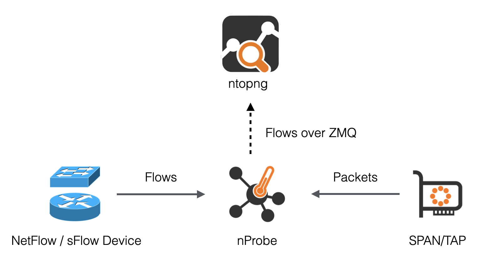
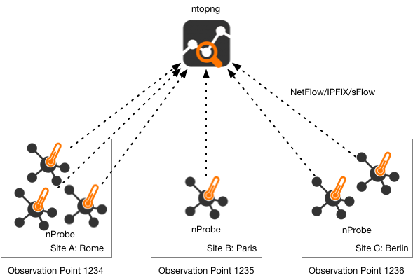
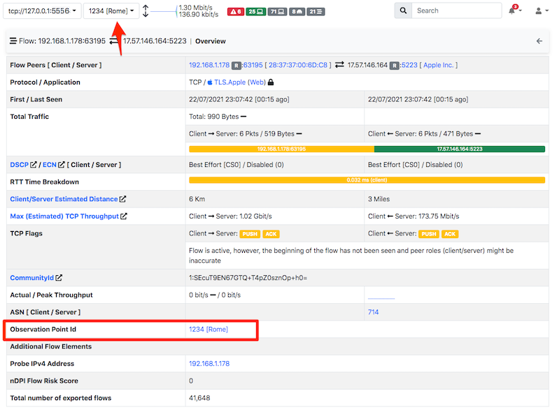
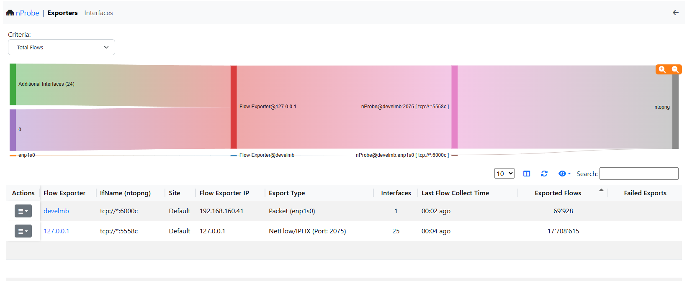
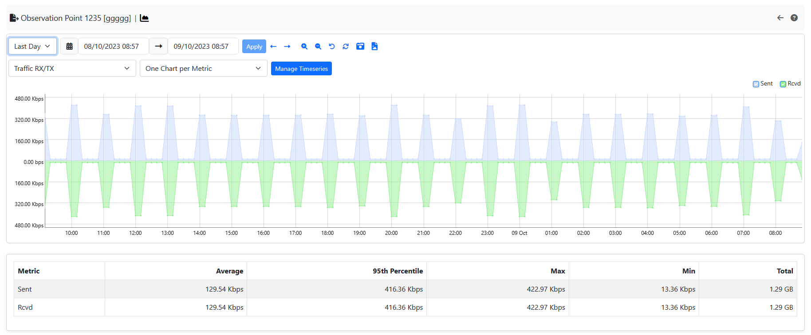
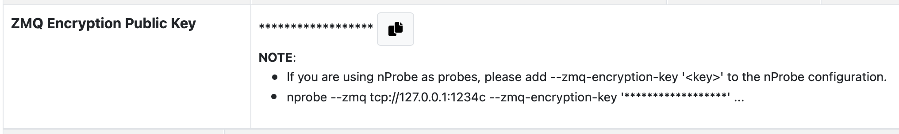

Использование ntopng с nProbe
ntopng можно использовать для визуализации данных о трафике, которые были сгенерированы или собраны nProbe.
Примечание
ntopng Enterprise L Bundle уже включает лицензию nProbe Pro, в этом нет необходимости. купить лицензию nProbe, если установлена лицензия ntopng Enterprise L Bundle.
Использование ntopng с nProbe удобно в нескольких сценариях, в том числе:
Визуализация данных NetFlow/sFlow создается маршрутизаторами, коммутаторами и сетевыми устройствами в целом. В этом сценарии nProbe собирает и анализирует трафик NetFlow/sFlow от устройств и отправляет полученные потоки на ntopng для визуализации.
Мониторинг физических сетевых интерфейсов, подключенных к удаленным системам. В этом сценарии ntopng не может напрямую контролировать сетевые интерфейсы и видеть их пакеты. Один или несколько nProbe можно использовать для захвата трафика удаленных сетевых интерфейсов и отправки полученных потоков в центральный ntopng для анализа и визуализации.
На следующем рисунке суммированы два сценария, описанные выше, и показано, что их также можно объединить.

Использование nProbe с ntopng
На рисунке выше стрелки от nProbe до ntopng обозначают логическое направление экспортируемых потоков. На практике:
Фактическое соединение может быть инициировано либо ntopng, либо nProbe, как описано в разделе Использование за брандмауэром.
nProbe экспортные потоки в формате TLV или опционально в стандартной комплектации JSON, свыше ZMQ (http://zeromq.org/). Преимущества этого подробно описаны в следующем сообщении блога. https://www.ntop.org/nprobe/why-nprobejsonzmq-instead-of-native-sflownetflow-support-in-ntopng/.
Ниже приведен минимальный рабочий пример конфигурации nProbe и ntopng для получения того, что показано на рисунке выше. В примере предполагается, что ntopng и nProbe работают на одном и том же (локальном) хосте. Если они работают на разных машинах, IP-адрес 127.0.0.1 необходимо изменить на адрес хостинга машины nProbe.
ntopng Конфигурация
ntopng -i tcp://127.0.0.1:5556
nProbe Конфигурация
nprobe --zmq "tcp://*:5556" -i eth1 -n none -T "@NTOPNG@" # raw packets
nprobe --zmq "tcp://*:5556" -i none -n none --collector-port 2055 -T "@NTOPNG@" # NetFlow/sFlow over UDP on port 2055
Вариант -T "@NTOPNG@", известный как шаблон, сообщает nprobe минимальный набор полей, которые он должен экспортировать, чтобы обеспечить совместимость с ntopng. Указание этой опции рекомендуется при использовании nProbe с ntopng. Другим сборщикам для работы могут потребоваться другие наборы полей. Шаблоны и экспортированные поля обсуждаются ниже.
Дополнительную информацию о настройке nProbe для ntopng см. https://www.ntop.org/nprobe/best-practices-for-the-collection-of-flows-with-ntopng-and-nprobe.
Экспортированные поля потока
Одним из преимуществ экспорта потоков в TLV или JSON является отсутствие фиксированного формата. Как следствие, набор полей, экспортированных из nProbe в ntopng, является переменным и настраиваемый используя шаблон nProbe. Чтобы обеспечить совместимость с ntopng, этот шаблон определен с помощью опции nprobe. -T, должен содержать следующий минимальный набор полей:
%IN_SRC_MAC %OUT_DST_MAC %SRC_VLAN %IPV4_SRC_ADDR %IPV4_DST_ADDR %L4_SRC_PORT %L4_DST_PORT %IPV6_SRC_ADDR %IPV6_DST_ADDR %IP_PROTOCOL_VERSION %PROTOCOL %L7_PROTO %IN_BYTES %IN_PKTS %OUT_BYTES %OUT_PKTS %FIRST_SWITCHED %LAST_SWITCHED %FLOW_TO_APPLICATION_ID %FLOW_TO_USER_ID %INITIATOR_GW_IP_ADDR %EXPORTER_IPV4_ADDRESS
Вместо того, чтобы указывать все поля выше по одному, можно использовать удобный макрос. @NTOPNG@ может использоваться как псевдоним для всех полей. nProbe автоматически развернёт такой макрос во время запуска. Следовательно, следующие две конфигурации эквивалентны:
nprobe --zmq "tcp://*:5556" -i eth1 -n none -T "@NTOPNG@"
nprobe --zmq "tcp://*:5556" -i eth1 -n none -T "%IN_SRC_MAC %OUT_DST_MAC %SRC_VLAN %IPV4_SRC_ADDR %IPV4_DST_ADDR %L4_SRC_PORT %L4_DST_PORT %IPV6_SRC_ADDR %IPV6_DST_ADDR %IP_PROTOCOL_VERSION %PROTOCOL %L7_PROTO %IN_BYTES %IN_PKTS %OUT_BYTES %OUT_PKTS %FIRST_SWITCHED %LAST_SWITCHED"
Дополнительные поля можно объединить с помощью макроса @NTOPNG@ указать дополнительные поля, которые будут добавлены к минимальному набору. Например:
nprobe --zmq "tcp://*:5556" -i eth1 -n none -T "@NTOPNG@ %FLOW_TO_APPLICATION_ID %FLOW_TO_USER_ID %INITIATOR_GW_IP_ADDR %EXPORTER_IPV4_ADDRESS"
Таймсерии высокого разрешения
Добавление %HR_SRC_TO_DST_BYTES и %HR_DST_TO_SRC_BYTES к шаблону позволяет
15-секундные счетчики байтов на поток. ntopng автоматически обнаруживает эти поля и сохраняет их.
в ClickHouse flows таблица для использования в диаграммах пропускной способности высокого разрешения:
nprobe -i eth1 -n none --zmq "tcp://*:5556" \
-T "@NTOPNG@ %HR_DST_TO_SRC_BYTES %HR_SRC_TO_DST_BYTES"
Изменение конфигурации ntopng не требуется — обнаружение и сохранение выполняются автоматически при ClickHouse настроен как серверная часть дампа потока. Видеть Наблюдаемость для получения полной информации.
Сбор от нескольких экспортеров
Существует два основных способа сбора потоков от нескольких экспортеров NetFlow/sFlow и визуализации данных в ntopng:
Запустив один экземпляр nProbe и направив всех экспортеров на один и тот же порт nProbe. Это более простой вариант, поскольку добавление нового датчика не требует внесения каких-либо изменений в конфигурацию. конфигурации nProbe/ntopng. Также возможно включить Динамическое дезагрегирование интерфейсов с помощью Probe IP для разделения потоков экспортеров.
Запустив несколько экземпляров nProbe, по одному для каждого экспортера. Этот метод является наиболее эффективным потому что каждые экспортированные данные будут обрабатываться отдельным потоком в ntopng, поэтому он может использовать CPU ядра многоядерной системы.
Вот пример настройки нескольких экземпляров nProbe (второй подход):
ntopng -i "tcp://127.0.0.1:5556" -i "tcp://127.0.0.1:5557"
nprobe --zmq "tcp://*:5556" -i none -n none --collector-port 2055
nprobe --zmq "tcp://*:5557" -i none -n none --collector-port 6343
В этом примере два экспортера NetFlows экспортируют потоки в порты 2055 и 6343 соответственно. nProbe использует два отдельных канала ZMQ для связи с ntopng. Потоки двух экспортеров будет разделен на два отдельных виртуальных сетевых интерфейса на ntopng:
tcp://127.0.0.1:5556: потоки от экспортера через порт 2055
tcp://127.0.0.1:5557: потоки от экспортера через порт 6343
Точки наблюдения
ntopng 5.0 и более поздние версии и nProbe 9.6 и более поздние версии включают поддержку точек наблюдения. Точка наблюдения определена в IPFIX как место в сети, где можно наблюдать пакеты. Это полезно при сборе потоков в больших сетях от сотен маршрутизаторов, так как ntopng позволяет создать ограниченное количество коллекций интерфейсов (до 32 виртуальных на данный момент), чтобы избежать объединения собранных потоков со всех маршрутизаторов.

Каждый экземпляр nProbe можно настроить для установки числового значения идентификатора точки наблюдения, которое является уникальным. идентифицирует сайт. В зависимости от размера сайта сайт может иметь один или несколько зондов.
Точку наблюдения можно настроить в nProbe, используя опцию -E, как показано в примере ниже.
Участок А (1 nProbe инстанс):
nprobe -i eth1 -E 0:1234 --zmq tcp://192.168.1.1:5556 --zmq-probe-mode
Зона Б (2 экземпляра nProbe):
nprobe -i eth1 -E 0:1235 --zmq tcp://192.168.1.1:5556 --zmq-probe-mode
nprobe -i eth2 -E 0:1235 --zmq tcp://192.168.1.1:5556 --zmq-probe-mode
Центральный ntopng (Коллектор потока):
ntopng -i tcp://92.168.1.100:5556c
В этой конфигурации потоки, отправленные с nProbe по ntopng, помечаются идентификатором точки наблюдения, который сообщил ntopng в веб-интерфейсе.
Все идентификаторы точек наблюдения, видимые ntopng, перечислены в раскрывающемся меню вверху страницы. Выбрав точку наблюдения, можно визуализировать только потоки, соответствующие этой точке наблюдения.

В меню «Зонды» на боковой панели можно перечислить все идентификаторы точек наблюдения, видимые ntopng, задайте собственное имя, щелкнув значок колеса, и визуализируйте статистику трафика, щелкнув значок диаграммы.

Обратите внимание, что хотя потоки выбираются Точкой наблюдения при использовании раскрывающегося меню, трафик, сообщаемый для хостов, AS, сетей и т. д., объединяется на уровне интерфейса независимо от этого. Это позволяет не дублировать статистику, когда хосты из разных точек наблюдения общаются друг с другом.
Графики точек наблюдения
На странице «Точки наблюдения» отображаются 5 столбцов: Точки наблюдения столбец, показывающий номер и псевдоним точки наблюдения (например, Париж); тот Диаграмма столбец, необходимый для отображения графиков точек наблюдения; тот Текущие хосты столбец, отображающий текущее количество хостов Точки наблюдения; тот Текущая пропускная способность который представляет текущую пропускную способность пункта наблюдения; тот Общий трафик столбец, показывающий общий трафик, выполненный точкой наблюдения (отправленные + полученные байты).
Для просмотра графиков точек наблюдения необходимо включить соответствующие настройки таймсерий. Для этого перейдите в Настройки, Таймсерии и прокрутите вниз; затем включите Датчики потока таймсерии.

Помимо базовых временных рядов (например, «Трафик», «Оценка» и т. д.), можно иметь временные ряды приложений. Чтобы их иметь, необходимо активировать Таймсерии приложений интерфейсов (переключить приложение интерфейса L-7 на «На приложение» или на «Оба»).

После этого станут доступны все временные ряды точек наблюдения (таймсерии «Трафик», «Оценка» и «Приложения»); перейдите на страницу «Точки наблюдения» и щелкните значок диаграммы, чтобы увидеть их.

Примечание
Максимальное количество точек наблюдения — 256, а данные временных рядов будут обновляться каждые 5 минут. Если ntopng перезапускается, как и другие таймсерии, эти данные (во время периода перезапуска) будут установлены в 0, после чего все будет работать как обычно.
Использование за брандмауэром
В оставшейся части этого раздела показано, как подключить nProbe и ntopng при наличии NAT или межсетевых экранов. Действительно, приведенные выше примеры могли бы не сработать, если бы между nProbe и ntopng существовал брандмауэр или NAT. После этого показан исчерпывающий список всех возможных сценариев, которые могут включать брандмауэры или NATs, а также конфигурацию, которую необходимо использовать, чтобы всегда обеспечивать соединение между nProbe и ntopng.
nProbe и ntopng в одной частной сети (защищено брандмауэром)
В этом сценарии брандмауэр не создает никаких проблем для связи ZMQ, и можно использовать обычные конфигурации, описанные выше.
nProbe в общедоступной сети/IP-адресе, ntopng в частной сети/IP-адресе, защищенном брандмауэром
В этом случае парадигма ZMQ работает хорошо, поскольку ntopng соединяется с nProbe, и можно использовать обычные конфигурации, выделенные выше.
nProbe в частной сети/IP-адресе, ntopng в общедоступной сети/IP-адресе, защищенном брандмауэром
В этом случае парадигма ZMQ не работает, поскольку брандмауэр не позволяет ntopng (инициатору соединения) подключиться к nProbe. В этом случае необходимо вернуть парадигму ZMQ, поменяв местами роли nProbe и ntopng. Предположим, nProbe работает на хосте. 192.168.1.100 и ntopng на хосте 46.101.x.y. В этом сценарии необходимо запустить приложения следующим образом:
nprobe --zmq-probe-mode --zmq "tcp://46.101.x.y:5556" -i eth1 -n none
ntopng -i "tcp://*:5556c"
Обратите внимание на два варианта:
--zmq-probe-modeсообщает nProbe инициировать соединение с46.101.x.y-i "tcp://*:5556c"сообщает ntopng действовать как сборщик (обратите внимание на небольшойc) и прослушивать входящие соединения.
По сути, роли nProbe и ntopng поменялись местами, поэтому они ведут себя так же, как зонды NetFlow/IPFIX. Только роли поменялись. Все остальное продолжит работать нормально и потоки по-прежнему будут переходить с nProbe на ntopng.
Коллекторное прохождение
nProbe можно настроить с помощью опции --collector-passthrough собрать NetFlow/sFlow и немедленно дословно отправить его на ntopng. Это может быть полезно для производительности в высокоскоростных средах. Видеть https://www.ntop.org/guides/nprobe/case_study/flow_collection.html для полноценного обсуждения.
Шифрование данных
ntopng и nProbe поддерживают шифрование данных поверх ZMQ. Это основано на встроенной поддержке шифрования CURVE в ZMQ и доступно в ZMQ >= 4.1.
Шифрование теперь включено по умолчанию: ntopng больше не принимает открытый текст ZMQ по умолчанию. Если шифрование не настроено пользователем явно, ntopng (и nProbe) возвращаются к открытой встроенной паре ключей по умолчанию. Этот ключ по умолчанию предотвращает только случайное раскрытие открытого текста и должен быть заменен путем правильной настройки выделенной пары ключей.
Чтобы настроить выделенную пару ключей, --zmq-encryption Эту опцию следует добавить в файл конфигурации. Пара частного/открытого ключей автоматически генерируется с помощью ntopng, а открытый ключ отображается на странице состояния интерфейса. Альтернативно, конкретный закрытый ключ может быть предоставлен вместе с --zmq-encryption-key-priv <key>.

Открытый ключ шифрования
Открытый ключ должен быть настроен в nProbe (то же самое относится к cento и n2disk при использовании в качестве зондов для ntopng) с помощью --zmq-encryption-key '<pub key>' вариант.
Пример:
Предположим, вы хотите запустить nprobe и ntopng на одном хосте и отправить потоки на ZMQ порт 1234.
Начните ntopng следующим образом:
ntopng -i tcp://127.0.0.1:1234 --zmq-encryptionПодключитесь к сети ntopng GUI, выберите интерфейс ZMQ, как показано на рисунке выше, и скопируйте значение –zmq-encryption-key ‘…’
Начните nprobe следующим образом:
nprobe --zmq-encryption-key '<pub key>' --zmq tcp://127.0.0.1:1234
Примечание. Если не указан закрытый ключ, ntopng генерирует пару открытого/закрытого ключей и сохраняет ее в /var/lib/ntopng/key.{pub,priv}
Если шифрование вообще нежелательно (например, в полностью доверенной сети или в старых развертываниях с экземплярами nProbe, экспортирующими открытый текст ZMQ), его можно отключить с помощью --zmq-disable-encryption.
Тюнинг
ZMQ использует буферы TCP для связи между nProbe и ntopng. Правильная настройка этих буферов необходима для оптимальной производительности в средах с интенсивным трафиком и высокой скоростью потока.
ntopng устанавливает буфер приема ZMQ через ZMQ_RCVBUF и использует 8388608 (8 MB) в качестве значения по умолчанию. Однако фактический размер буфера может быть ограничен максимальным размером буфера приема в масштабе всей системы.
Чтобы проверить текущий общесистемный лимит, запустите:
cat /proc/sys/net/core/rmem_max
Если выходные данные показывают значение ниже 8388608 (например, 212992), вам следует увеличить его, чтобы избежать узких мест в производительности и потенциальной потери потока.
Чтобы временно увеличить размер буфера приема, используйте:
sudo sysctl -w net.core.rmem_default=16777216
Это изменение будет потеряно после перезагрузки системы.
Чтобы сделать изменение постоянным, добавьте следующую строку либо в /etc/sysctl.conf или /etc/sysctl.d/99-zmq.conf:
net.core.rmem_default=16777216
После редактирования файла примените изменения с помощью:
sudo sysctl -p
Быстрый старт
Пример файла конфигурации для запуска ntopng в качестве сборщика ZMQ для nProbe установлен в Unix. системы в /etc/ntopng/ntopng.conf.nprobe.sample. Как описано в Запуск ntopng в качестве демона раздел, файл конфигурации должен называться ntopng.conf и должен быть помещен в /etc/ntopng/, когда запуск ntopng в качестве демона в системах Unix с init.d или системный поддерживать. Чтобы включить этой конфигурации, вам следует заменить файл конфигурации образцом конфигурации и перезапустите службу:
cp /etc/ntopng/ntopng.conf.nprobe.sample /etc/ntopng/ntopng.conf
systemctl restart ntopng
Обратите внимание, что пример конфигурации предполагает, что оба ntopng и nProbe работают на тот же (локальный) хост. Если они работают на разных машинах, необходимо изменить файл конфигурации. с адресом хостинга машины nProbe.
Аналогичным образом также устанавливается пример файла конфигурации для nProbe (с помощью nprobe пакет) в Unix системы в /etc/nprobe/nprobe.conf.ntopng.sample. Чтобы включить эту конфигурацию, также в В этом случае вам следует заменить файл конфигурации образцом конфигурации и перезапустить сервис:
cp /etc/nprobe/nprobe.conf.ntopng.sample /etc/nprobe/nprobe.conf
systemctl restart nprobe
Обратите внимание: пример конфигурации для nProbe предполагает, что экспортер NetFlow доставляет
от NetFlow до nProbe на порту 6363. В этом случае nProbe действует как прокси, собирая NetFlow и доставляя
течет до ntopng через ZMQ. Если вам необходимо обрабатывать текущий трафик на физическом интерфейсе, интерфейс
имя должно быть установлено вместо -i=none и --collector-port=6363 следует закомментировать.